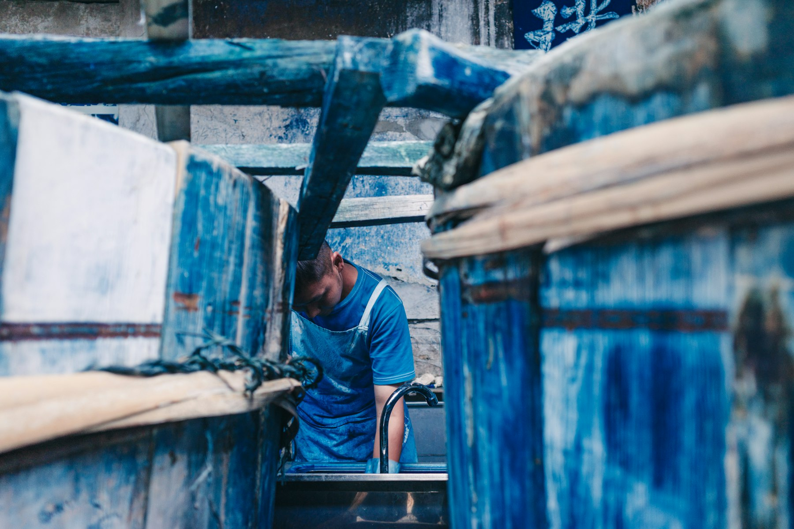
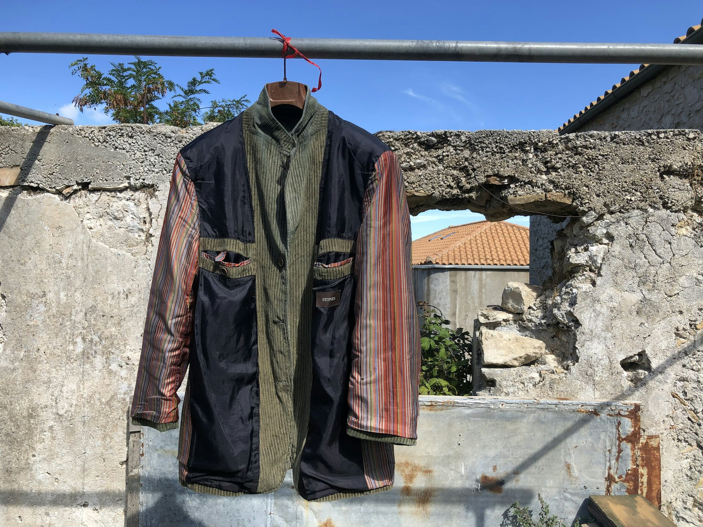

Kasa Shoulder Coat
MSŌ 401- Cloth
- 14 oz kasuri cotton
- Dye
- 60-dip kachi-iro
- Stitch
- 4 mm sashiko, hand-run
- Weight
- 1 840 g (size 3)
¥286,000Made to order · 12 wks
Garments cut for the long road. Natural indigo, hand-run sashiko, and cloth that earns its shape over years — never over a season.
A masterless garment answers to the wearer, not to the season.
We began in 2011 with four indigo vats sunk into the floor of a Nishijin weaver's house and a stubborn refusal to shorten anything. The vats are still there. They are fed wheat bran and lye on a schedule, and they are, in the working sense of the word, alive.
Every piece leaves the atelier under-finished on purpose. The indigo will lighten at the elbows before it lightens anywhere else. The sashiko will pucker, then settle. Ten years in, the cloth will be a record of where you put your hands.
Indigo does not dissolve in water — it is reduced in a fermenting vat, then oxidised in open air. Colour is built one immersion at a time. Each traditional name below is a fixed number of dips, not a swatch.

Drawn as the atelier drafts them — technical flats, at scale, before a single metre is cut. Full specification travels with each garment.
The sequence cannot be reordered or run in parallel — the vat has to be alive before it can take cloth, and the cloth has to rest before it can be cut.
Composted sukumo, wood-ash lye, wheat bran and sake are fed to the vat until it froths. Temperature is held by hand, not thermostat.
14 daysSixty immersions. Each one is followed by full oxidation in open air, where the cloth turns from yellow-green to blue in about ninety seconds.
21 daysRunning stitch at a 4 mm pitch, laid in by two hands across the stress panels — shoulder yoke, elbow, seat. No machine can hold the pitch loose enough.
46 hoursWashed in soft water, weighted, and left on the bolt in the dark. Indigo keeps moving for weeks; cutting early guarantees a garment that twists.
30 days
Collection Ⅳ is not sold online. Each room keeps its own size run and its own indigo depth — ask for the vat number before you order.